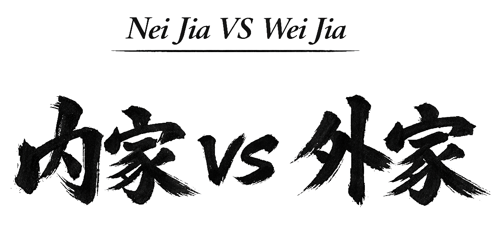

Popularmente se reconocen dos grandes agrupaciones dentro del Wǔshù chino: la Escuela Interna y la Escuela Externa. Esta distinción, sin embargo, no está libre de controversia. Las interpretaciones son variadas y, en algunos casos, se cuestiona incluso que dicha división exista realmente, considerándola más un recurso de marketing para prestigiar ciertos estilos que una clasificación objetiva y verificable.
Aun así, dentro del Sistema Mian Quan se adopta una interpretación funcional de estos conceptos que permite establecer una diferenciación clara entre dos grandes conjuntos de estilos, cuyas estrategias de entrenamiento y combate difieren de manera concreta y observable.
Es importante señalar que, cuando un practicante alcanza un alto nivel de dominio —sea en un estilo interno o externo—, sus ejecuciones tienden a converger en cualidades comunes: armonía, economía de movimiento, precisión, naturalidad y la capacidad de hacer parecer sencillo lo complejo. Esta similitud en la maestría explica por qué muchos practicantes consideran que la distinción entre interno y externo es meramente cosmética o comercial.
En el Sistema Mian Quan, esta diferenciación está estrechamente vinculada a la distinción entre Gong Fu de Gong y Gong Fu de Fa (analizados en el artículo anterior Gong Fu Vs Gong Fa). A continuación se presenta una tabla comparativa que permite contrastar de forma clara las diferencias estratégicas entre un estilo Externo (Wèi Jiā) y un estilo Interno (Nèi Jiā):